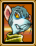
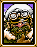
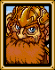

캐릭터
*마법옆의 괄호안의 번호들은 특정 레벨의 마법을 배우는데 필요한 레벨을 가리키는것입니다. 전직전레벨과 전직후 레벨을 모두 합산하여 계산된것이니 전체레벨에서 자신이 전직했던 레벨을 빼시면 마법을 얻으실수 있는 전직후의 레벨이 대충 나타납니다. 이미 전직하여 동료가 된 캐릭터들은 그 레벨에서 20을 빼십시오. 슬래이드와 소환사들의 레벨은 전직후의 레벨을 가리키는것입니다.
보우이
영문명 : 보위
등장/언급된 게임들 : 샤이닝포스2, 샤이닝 위스덤
전직전 클래스 : SWMN (검사)
전직후 클래스 : HERO (영웅)
장착 가능한 무기 : 검
동료가 되는 시기 : 처음부터
배울수 있는 마법 : 에그레스(1), 볼트 (22 31 42 51)
설명 : 샤이닝 포스2의 주인공입니다. 다른 영웅들보다는 좀 나이가 어리게 생겼지만 실력은 동등히 막강합니다. 조금만 키우셔도 힘이 부쩍부쩍 오르는 캐릭터입니다. 나중에 얻게 되는 볼트(스파크) 역시 마법으로서는 유용하게 쓰이지만 (레벨4면 아주 엄청난 대미지를 주실수 있으며 레벨3는 적이 밀집된곳에 쏴주시면 큰 효과를 보실수 있습니다.) MP가 적다는것이 단점입니다. 검들은 모두 다룰줄 알며 White Ring(백의반지)를 낄수도 있기때문에 방어력도 무척 높아질수 있습니다. 다만 주인공이기 때문에 보우이가 죽으면 자동으로 귀환하게되어 그 전투는 다시 시작해야합니다.
총점 : 9/10
사라

"잘들어, 넌 우리들의 대장이야. 네가 지면 우리도 지는거야, 알겠지?"
"쟈하가 얼마나 키가 작은지 눈치챘니?"
일본명 : 사라
등장/언급된 게임들 : 샤이닝포스2, 샤이닝 위스덤
전직전 클래스 : PRST (승려)
전직후 클래스 : VICR (대사) 혹은 MMNK(매스터 멍크)
장착 가능한 무기 : 지팡이 혹은 장갑(매스터 멍크로 전직했을시)
동료가 되는 시기 : 학교에서
배울수 있는 마법 : 힐(1 7 22 40),디톡스(4 13 33 45),헬블라스트(10 16 25 36),슬로우(19 29)
설명 : 체스터와 함께 초반부터 동료가 되는 캐릭터입니다. 게임중반까지는 독보적인 회복계열의 캐릭터입니다. 전투때마다 시간이 나시면 회복이 필요없으시더라도 힐을 한번씩 날려주시면 경험치가 거의항상 10씩 오릅니다. 이렇게 해서 아주 레벨업을 쉽게 하실수 있습니다. 나중에 매스터 멍크로 전직하시면 더욱 더 강력한 캐릭터가 됩니다. 싸움도 잘하면서 회복도 해주고~ 정말 일석이조의 캐릭터이지요. 물론 나중에 등장하는 프래이자의 다수회복마법이 오라나 쉴라/카르나의 부스트마법보다는 좀 더 효율성이 떨어지는 마법들을 가지고 있지만 일단 회복과 격투, 둘 다 하시고 싶으시다면 당연히 사라를 골라야합니다. 물론 대사로 전직하셨다면 좀 더 효율성이 떨어지겠죠. 영문판은 기합의 구슬이 두개나 있으니 카르나를 나중에 얻으시는 한이 있더라도 사라를 빼먹으시지 맙시다.
총점 : 9/10
체스터
"(히히힝)...아, 난 진짜 전투에 참가하는게 좋아!"
"난 쟈하보다 훨씬 키가 크지. 헤헤...(히히힝)
일본명 : 후이
등장/언급된 게임들 : 샤이닝포스2
전직전 클래스 : KNT (기사)
전직후 클래스 : PLDN (팔라딘) 혹은 PGKT(페가수스 나이트)
장착 가능한 무기 : 투창(Spear)혹은 Lance(창)
동료가 되는 시기 : 학교에서
배울수 있는 마법 : 없음
설명 : 사라와 함께 초반부터 동료가 되는 캐릭터입니다. 게임중반에 릭이 동료가 될때까지는 독보적인 켄타우르스 캐릭터입니다. 켄타우르스답게 기동력이 다른캐릭터와 비교해서 가장 높으며 공격력과 방어력역시 아주 밸런스가 좋습니다. 특히 페가수스날개라는 전직아이템을 이용해 페가수스 나이트로 전직을 하신다면 기동력에 있어서는 별다른 불평이 없으실것입니다. 페가수스 나이트로 전직을 하지 않으신다면 숲속과 사막에서 기동력이 형편없이 떨어집니다. 초반에는 강하지만 중후반에 가서는 그저그런 캐릭터로 전락합니다. 그래도 높은 기동력을 최대한 사용하시며 사용하신다면 분명 아주 도움이 될것입니다.
총점 : 7/10
쟈하

"차렷! 점검할 준비는 다되었습니다!"
"아욱, 사라가 방금 내가 얼마나 키가 작다고 말하다니."
일본명 : 자자
등장/언급된 게임들 : 샤이닝포스2
전직전 클래스 : WARI (전사)
전직후 클래스 : GLDT (글래디에이터) 혹은 BRN(바론)
장착 가능한 무기 : 도끼 혹은 검(바론으로 전직했을시)
동료가 되는 시기 : 첫번째 전투후 마을을 나갈때
배울수 있는 마법 : 없음
설명 : 초반에는 그 누구도 막을수 없는 엄청난 공격력과 방어력으로 선두를 유지하지만...민첩성과 기동력이 무지 떨어지는 캐릭터입니다. 몸빵캐릭으로 쓰기에는 느린 민첩성때문에 약간 문제이죠. 하지만 전사의 긍지라는 전직아이템을 사용하셔서 바론으로 전직하신다면 기동력도 +1 올라가고 도끼보다 약간 강한 검들도 쓸수 있기때문에 꽤 괜찮은 캐릭터가 됩니다. 민첩의 반지를 적절히 사용하신다면 전투에 약간이나마 도움이 될것입니다. 하지만 역시 활약할 기회를 많이 만들어줘야한다는것이 문제겠지요.
총점 : 7/10
카진

"하웰님의 가르침은 정말 유용하지. 전략은 그분의 전문분야셨으니."
"마법을 쓰는건 나를 빨리 지치게 한다. 많이 쉬어야하지."
일본명 : 카진
등장/언급된 게임들 : 샤이닝포스2, 샤이닝 위스덤
전직전 클래스 : MAGE (법사)
전직후 클래스 : WIZ (마법사) 혹은 SOCR(소환사)
장착 가능한 무기 : 지팡이
동료가 되는 시기 : 세번째 전투후 하웰의 집에서
배울수 있는 마법 : (법사혹은 마법사일 경우) 블래이즈 (1 5 22 35), 머들 (9 25), 디스펠 (13)디소울(18 29)
(소환사로 전직한 경우) 다오(1 12), 아폴로(4 17), 넵튠(7 26), 아틀라스 (21 32)
설명 : 초반의 법사로 여러 적들을 때릴수 있고 방어력을 무시하는 마법을 쓴다는 매력이 있습니다. 하지만 방어력은 꽤 낮은편이며 마법이 다 떨어지면 지팡이로 때린다해도 그리 큰 효과를 보실수가 없습니다. (물론 흑의반지나 악의반지를를 끼시면 공격력이 조금 올라갑니다만...저주입니다 -_-) 특히 레벨40에 전직을 하신다면 더욱 X이 되는게 법사들입니다. 마법주문의 대미지는 그대로이거든요. 비밀의책을 사용하셔서 소환사로 만드실수 있는데, 타야말고 소환사가 하나 더 필요하시다면 추천하는 캐릭터입니다. 왜냐고요? 카진의 대부분 마법이 쓸모없기 때문입니다. 디스펠,슬리프, 이딴게 뭔 소용입니까? 거의 걸리지도 않고. 디소울, 네, 한방에 싹뚝 자르는 통쾌함이 있긴 하지만 역시 거의 걸리지 않으며 걸려봤자 경험치 적게 얻으니 양쪽으로 손해지요. 그나마 쓸만한 블래이즈는 타이린의 프리즈에 비교해 허약하기만 합니다. 그래도 화려한 마법을 좋아하시는분들이시라면 카진을 잘 호위하여 키워줍시다.
총점 : 6/10
슬래이드


"나는 어둠의 그림자와도 같다! 고요하면서도 살벌하게!"
"전투가 끝난후 더욱 많은 보물들을 훔칠 계획을 짜고있어."
일본명 : 지포
등장/언급된 게임들 : 샤이닝포스2
전직전 클래스 : THF (도둑)
전직후 클래스 : NINJ (닌자)
장착 가능한 무기 : 단검(전직전),검(전직후)
동료가 되는 시기 : 다섯번째 전투후
배울수 있는 마법 : (전직후) 카톤(4 9 25), 라이진(14 19 32)
설명 : 대기만성형의 캐릭터가 바로 슬래이드가 아닌가 싶습니다. 초반에는 무지 약하고 방어력도 떨어집니다. (하지만 기동력과 민첩성은 쓸만합니다.) 하지만 약간만 키워주시면 레벨 15서부터 엄청나게 강해집니다. 전직후서부터 스탯이 팍팍 올라가며 마법까지 배우게 됩니다. (하지만 MP는 보우이와 비슷하기 때문에 마법 주력 캐릭터론 쓸순 없습니다.) 적을 한방에 싹뚝 자를수 있다는 기사르메를 소지할수 있는 유일한 캐릭터입니다. 처음 슬래이드가 약하다고 슬래이드를 키우지 않으시는 실수를 저지르지 맙시다! 방어력은 그저 그러니 몸빵보다는 공격형으로 씁시다.
총점 : 9/10
키위
"말하는것도...힘들어. 싸우는것도...힘들어. 힘들다.
"훈련을 하고 있어...피하기...피하기...휴...힘들다!"
일본명 : 키위
등장/언급된 게임들 : 샤이닝포스2
전직전 클래스 : TORT (거북이)
전직후 클래스 : MNST (괴물)
장착 가능한 무기 : 없음
동료가 되는 시기 : 일곱번째 전투전 그란스마을에서 대화를 하면
배울수 있는 마법 : 없음
설명 : 샤이닝포스1의 요구르트와, 샤이닝포스3의 펜과 같은 샤이닝포스2의 마스코트적인 존재입니다. 역시 마스코트적인 존재답게 가장 키우기가 까다로운 캐릭터이기도 합니다. 초반부터 방어력은 무지 높습니다. 맞으면 1밖에 안다니 몸빵캐릭으로 좋죠. 하지만 공격력이 터무니없이 낮아서 힘의반지를 항상 끼고다녀야 그나마 쓸만하며 HP도 낮기 때문에 방어력을 무시하는 마법이나 내뿜는공격에는 속수무책으로 한방에 골로 갑니다. 슬래이드와 같은 레벨15부터...더 좋아지는게 아니라 그나마 장점으로 내세웠던 방어력마저 기존캐릭터들과 비슷하게됩니다. 전직을 하면 날아다닐수있기 때문에 (하지만 피터나 루크같은 완전한 비행캐릭터는 아니라서 물같은곳만 넘어다닐수 있습니다.) 기동력에서 가히 최고를 자랑합니다만...역시 공격력이 뒤집니다. 가끔 필살기로 불도 뿜는데 이정도라면 차라리 쓸만하겠죠, 가끔 가다가 나오기 때문에 별로 쓸만한건 아닙니다. 하지만 키위의 공격력만 어떻게 해주신다면 기동력을 살려 보우이를 도와주는 캐릭터로 적당히 사용하실수가 있습니다.
총점 : 4/10
피터

"피닉스는 신부가 필요없어. 우리는 우리들 자신을 살릴수 있어."
"보우이, 내가 버르장머리가 없어? 그런 소문을 들었어."
영문 매뉴얼명 : 애쉬
등장/언급된 게임들 : 샤이닝포스2
전직전 클래스 : PHNK (피닉)
전직후 클래스 : PHNX (피닉스)
장착 가능한 무기 : 없음
동료가 되는 시기 : 파르메키아 상륙후(컴퓨터 조종), 볼카논과 만난후(플래이어 조종)
배울수 있는 마법 : 없음
설명 : "노밸런스"를 소리지르게끔 하는 진짜 밸런스붕괴의 캐릭터입니다. 처음에 컴퓨터가 조종할때는 좀 짜증이 납니다. 적이 없을땐 엄청 늦게 이동하면서도 약체들에게 남겨준 고깃덩이가 있으면 (HP 낮은 적들^^) 언넝 가서 낼름 먹어버리는 얄미운 아군입니다. 하지만 볼카논과 만난후 진정한 동료가 되면 예전의 얄미움은 싸악 잊게 할만큼 무적의 캐릭터가 됩니다. 레벨업에 스탯이 3씩 오르는것은 자주 있는일이며 레벨40에 전직했을때는 진짜 최강이라고 생각할정도의 캐릭터가 됩니다. 게다가 날수도 있으니 기동력도 어디하나 빼먹을수도 없으며 몸빵역시 슬래이드보다는 약간 좋으니 혼자 내버려둬도 어느정도는 살수있습니다. 피터를 얻으신후 다시는 피터를 빼기는 싫으실것입니다.^^
총점 : 10/10
매이
"나는 켄타우르스야. 하지만 활과 화살을 쓸수있지!"
"그란스는 어떻게 생겼어? 난 시골출신이라 도시가 아주 좋아!"
일본명 : 매틸다
등장/언급된 게임들 : 샤이닝포스2
전직전 클래스 : RNGR (레인저)
전직후 클래스 : BWNT (보우나이트)
장착 가능한 무기 : 활
동료가 되는 시기 : 전투8후 리블마을에서 대화하면
배울수 있는 마법 : 없음
설명 : 처음으로 얻는 궁수캐릭터입니다. 처음에는 공격범위가 2라서 투창을 쓰는 켄타우르스와 별로 다르진 않지만 전직후 더욱 강력한 무기를 얻으면 공격범위가 3까지 올라가며 드디어 장거리 캐릭터로써 활약을 할수있게 됩니다. 장거리로 공격을 하는 캐릭터인 만큼 방어력은 좋진 않지만 엘릭이나 쟈넷보다는 낫습니다. 공격력도 후반에 가면 갈수록 궁수치고는 엄청나게 강해집니다. 궁수가 필요하시다면 당연히 사용하셔야할 캐릭터입니다. 다만, 역시 켄타우르스이기 때문에 사막과 숲속에서의 기동력은 현저하게 떨어진다는것이 단점입니다.
총점 : 8/10
게르할트


"나같이 진정한 강자는 무기가 필요하지 않다!"
"크르르르르...크르르르르...이정도면 충분해? 무섭게 보일려고 노력하고있어."
일본명 : 게르할트
등장/언급된 게임들 : 샤이닝포스2
전직전 클래스 : WFMN (울프맨/수인)
전직후 클래스 : WFBN (울프바론/수인왕)
장착 가능한 무기 : 없음
동료가 되는 시기 : 피터를 플래이어 조종가능한 동료로 한후 다음 전투에서
배울수 있는 마법 : 없음
설명 : 강하다는게 몸에 나타나는 캐릭터입니다. 초반부터 괜찮은 공격력을 가지고 있으면서 전직하면 훨씬 강해지는 캐릭터입니다. 멧집도 좋은편이며 켄타우르스들과는 달리 수인이라서 숲속에서의 기동력도 좋습니다. 다만 슬래이드나 피터같이 무자비하게 강한편은 아닙니다.
총점 : 8/10
루크

"진짜 날아다니며 찔러죽이는게 재미있어!"
"난 카라밴보다는 전투터가 더 좋아."
일본명 : 루도
등장/언급된 게임들 : 샤이닝포스2
전직전 클래스 : BDMN (조인/버드맨)
전직후 클래스 : BDBT (조인군인/버드배틀러)
장착 가능한 무기 : 검
동료가 되는 시기 : 게르하르트가 동료가 된후의 전투후 뗏목을 얻었을때
배울수 있는 마법 : 없음
설명 : 루크...확실히 강한 캐릭터는 아닙니다. 그렇다고 방어력도 그리 좋은편도 아니고요. 하지만 루크의 활약은 날아다닐수 있다는 기동력에 있습니다. 조금만 노력을 기울이신다면 분명 좋은 캐릭터가 될수 있습니다. 물론 노밸런스 피터와 비교할수는 없겠지만 그래도 도움이 될것입니다.
총점 : 7/10
릭
"우리 켄타우르스족은 전투의 주요부대이지. 우리는 굉장하다고!"
"보우이, 너와 함께 여행하는것은 내가 생각했던것보다 훨씬 박진감이 있어!"
일본명 : 믹
등장/언급된 게임들 : 샤이닝포스2
전직전 클래스 : KNTE (기사)
전직후 클래스 : PLDN (팔라딘) 혹은 PGNT(페가수스 나이트)
장착 가능한 무기 : 투창(스피어), 창(랜스)
동료가 되는 시기 : 카라밴을 얻은후 핫산에서
배울수 있는 마법 : 없음
설명 : 체스터 짝퉁의 켄타우르스입니다. 약간 공격력이 좋고 HP가 많은것같이 느끼는것밖에는 (이것도 확실히 그렇게 생각하는것이 아니라 그렇게 느껴진다는것뿐입니다 ㅡ,.ㅡ)것도 그리 체스터와 다른점은 없습니다. 페가수스의 날개라는 전직아이템을 이용해 페가수스 나이트로의 전직을 누가 하느냐에 따라서 쓸모있는가가 결정되겠죠.
총점 : 7/10
엘릭

"창공의 적은 제꺼에요! 제 화살로 뚦어주죠!"
"하아...힘든 전투후에 쉰다는게 정말 좋군요."
일본명 : 폴포네인
등장/언급된 게임들 : 샤이닝포스2
전직전 클래스 : ACHR (궁사)
전직후 클래스 : SNIP (스나이퍼) 혹은 BRGN(브란즈 거너)
장착 가능한 무기 : 활
동료가 되는 시기 : 전투20후
배울수 있는 마법 : 없음
설명 : 매이 다음으로 얻는 궁수입니다. 초반에 전직하기전에는 샤이닝포스1의 한스나 다이앤을 보는것같이 약체입니다만 일단 전직을 하시면 쓸모있는 장거리 궁수가 됩니다. 실버탱크를 이용하여 브란즈 거너로 전직하시면 방어력은 올라가나 민첩성이 떨어집니다. 반대로 전직아이템을 쓰지 않으시고 스나이퍼로 전직하신다면 민첩성은 브란즈 거너로 전직하셨을때보다 더 올라가지만 대신 방어력이 떨어집니다. 매이만큼 멧집이 좋지않기 때문에 신중히 생각하셔서 전직을 하셔야합니다.
총점 : 7/10
에릭
"전 어렸을때부터 훈련을 했지요. 힘보다는 스타일이 더욱 중요합니다."
"이 군에는 켄타우르스병사들이 많군요. 하지만 제가 그중에서 으뜸이라고 생각합니다."
일본명 : 엘릭
등장/언급된 게임들 : 샤이닝포스2, 샤이닝포스3
전직전 클래스 : KNTE (기사)
전직후 클래스 : PLDN (팔라딘) 혹은 PGNT(페가수스 나이트)
장착 가능한 무기 : 투창(스피어), 창(랜스)
동료가 되는 시기 : 크리드의 저택을 떠날때/카밀라를 무찔렀을때
배울수 있는 마법 : 없음
설명 : 역시 체스터/릭 짝퉁의 켄타우르스입니다. 개인적인 느낌으로는 (역시 제자신으로도 확실하지 않습니다) 체스터와 릭보다는 약간 좋은 능력을 가지고 있다고 생각하지만 그래도 거기서 거기입니다. 아마도 대부분 카르나를 고르시기 때문에 나중에 얻으셔서 필살렙업을 하실때 그렇게 느끼시는것 같기도 하겠지요. 4명중에서 일순위로 뽑히기엔 아마 뭔가가 부족한게 아닌가 싶습니다.
총점 : 7/10
랜돌프

"난 언제든지 악마들을 상대할수 있다! 어서 오너라!"
"야, 돌았냐? 어서 나를 전투에 넣어줘!"
일본명 : 돈고
등장/언급된 게임들 : 샤이닝포스2, 샤이닝포스3
전직전 클래스 : WARR (전사)
전직후 클래스 : GLDT (글래디에이터) 혹은 BRN(바론)
장착 가능한 무기 : 도끼, 혹은 검(바론으로 전직시)
동료가 되는 시기 : 크리드의 저택을 떠날때/카밀라를 무찔렀을때
배울수 있는 마법 : 없음
설명 : 이번엔 쟈하의 짝퉁입니다. 쟈하보다는 약간 좋다고 느껴집니다. 누가 바론이 되느냐에 따라서 사용도가 결정될것같습니다. 역시 4명중에서 일순위로 뽑히기엔 부족합니다.
총점 : 7/10
타이린

"내 마법의 힘이 굉장한 도움이 될것이다."
"요즘 젊은것들은 정말 이해하기가 힘들구나. 내가 나이가 먹어가는건가...?"
일본명 : 파이퍼
등장/언급된 게임들 : 샤이닝포스2, 샤이닝포스3
전직전 클래스 : MAGE (법사)
전직후 클래스 : WIZ (마법사) 혹은 SORC(소환사)
장착 가능한 무기 : 지팡이
동료가 되는 시기 : 크리드의 저택을 떠날때/카밀라를 무찔렀을때
배울수 있는 마법 : (법사/마법사일시) 블래이즈(1 11 51 56),프리즈(5 22 31 38),슬리프(25),볼트(28 35 54 60) (소환사로 전직했을시) 다오(1 12), 아폴로(3 16), 넵튠(8 25), 아틀라스 (29)
설명 : 카진과 같은 법사입니다. 하지만 마법들을 보시다시피 대개가 카진이 가지고 있는것보다는 낫습니다. 프리즈의 경우는 블래이즈보다 공격거리가 궁수들과 똑같이 3칸이며 공격력도 블래이즈보다는 낫습니다. 물론 소환사로도 문제는 없습니다만 소환사로 되려고 저 마법들을 버리기엔 너무 아깝습니다. 카진보다는 훨씬 아깝겠지요. 혹시 사라와 카르나 둘다 매스터 멍크로 전직하시려 하신다면 우선 타이린부터 데려가시기 바랍니다. 타이린이 다른 캐릭터들보다 노가다 필살레벨이 더욱 힘듭니다. (카진과 마찬가지로 방어력이 낮기 때문이죠) 그후 두번째의 기합의구슬을 얻으신후 카르나를 전직하시면 됩니다. 어차피 카르나는 쭉쭉 렙업이 되니까요.
총점 : 7/10
카르나

"저는 악마가 두렵지 않아요. 다음 전투는 언제죠?"
"쟈하는 정말 귀엽긴 해요. 키가 약간 작긴해도요."
일본명 : 트위기
등장/언급된 게임들 : 샤이닝포스2, 샤이닝포스3
전직전 클래스 : PRST (승려)
전직후 클래스 : VICR (대리) 혹은 MMNK(매스터 멍크)
장착 가능한 무기 : 지팡이 혹은 장갑(매스터 멍크로 전직시)
동료가 되는 시기 : 크리드의 저택을 떠날때/카밀라를 무찔렀을때
배울수 있는 마법 : 힐(1 5 22),헬블라스트(8 16 26 37), 부스트(12 30), ,오라(33 41 55 60)
설명 : 피터와 같은 노밸런스 캐릭이 또하나있습니다. 물론 대리로 전직하셨다면 약간 효율성은 떨어지겠지만 그래도 두려운 존재입니다. 뭣때문일까요? 바로 부스트 마법과 오라 마법 때문입니다. 부스트는 아군들을 모두 모여놓고 한번 쏘시면 아군들의 민첩성과 방어력이 마니 올라가면서도 카르나자신도 아군한명당 경험치 5씩, 최고 49까지 얻을수 있기때문입니다. 이렇게 반복하시면 레벨이 급격하게 빨리 오릅니다. 오라역시 전체회복능력을 가졌기 때문에 엄청나게 유용한 마법입니다. (오히려 힐쓰기가 싫어질걸요?) 4명중에서 당연히 일순위로 고르는 캐릭터입니다. 사라와 비슷한 능력을 가졌지만 부스트하나만으로 사라와는 비교를 거부하는 캐릭터로 발군이 됩니다. 카르나를 사용하고 싶으면서도 사라와 카르나 둘다 매스터 멍크로 사용하시고 싶으시다면 쉴라를 얻으실때까지는 (두번째 기합의 구슬이 쉴라얻는곳에 있거든요.) 사라를 카라밴에 넣어두는수밖에 없습니다. (레벨20에 전직하시는분들이시라면요.)
총점 : 10/10
쟈넷

"저는 전투가 두려워요. 하지만 적들로는 절대 도망치지 않을거에요!"
"저는 엘릭과 함께 있는것만해도 무척 행복하답니다!"
영문명 : 재넷
등장/언급된 게임들 : 샤이닝포스2
전직전 클래스 : ACHR (궁사)
전직후 클래스 : SNIP (스나이퍼) 혹은 BRGN(브란즈 거너)
장착 가능한 무기 : 활
동료가 되는 시기 : 크리드를 만난후 그란실마을로 가서 왕을 만난후 그란실을 떠날때
배울수 있는 마법 : 없음
설명 : 엘릭의 여자친구로 능력치도 비슷합니다. 실버탱크 전직아이템을 누구에게 사용하느냐에 따라서 둘의 능력치들이 달라지겠죠. 실버탱크를 안쓰시고 둘다 스나이퍼로 쓰셔도 괜찮습니다. 둘다 매이보다는 떨어지는 궁사들이지만 적어도 숲속에서만큼은 매이의 기동력을 훨씬 능가합니다.
총점 : 7/10
로이드

"대단하군! 이 대포가 정말 좋아!"
"고대인들은 정말 영리해! 차량안으로 들어가서 여행하고 다니는건 정말 대단해!"
영문명 : 로드
등장/언급된 게임들 : 샤이닝포스2
전직전 클래스 : 없음
전직후 클래스 : BRGN (브란즈 거너)
장착 가능한 무기 : 활
동료가 되는 시기 : 북쪽바위를 뚦었을때
배울수 있는 마법 : 없음
설명 : 처음으로 전직해서 등장하는 캐릭터입니다. 레벨40에 전직하시는분들은 불만이실겁니다. 실버탱크를 이용하여 전직한 브란즈 거너인만큼 확실히 민첩성을 떨어지지만 방어력은 높은편입니다. 공격력역시 매이만큼 좋은편이라고 생각합니다.
총점 : 6/10
히긴스

"난 완전히 나았소! 적군은 어딨소?"
"난 내 자신을 죽일순 없소, 왜냐고? 난 흡혈귀가 아니잖소."
일본명 : 히긴즈
등장/언급된 게임들 : 샤이닝포스2
전직전 클래스 : 없음
전직후 클래스 : PLDN (팔라딘)
장착 가능한 무기 : 투창(스피어), 창(랜스)
동료가 되는 시기 : 게슙이 처음 등장한 전투후
배울수 있는 마법 : 없음
설명 : 이미 전직해서 나온 팔라딘입니다. 능력치는 보통 팔라딘으로 전직한 기사들과 비슷합니다. 레벨40에 전직하시는분들이 보시기엔 답답하게 보일것입니다.
총점 : 6/10
타야

"자연의 힘은 악마들을 능가합니다!"
"미튤라여신님께서는 아주 젊게 생기셨지만 실제로는 아주 나이가 많으시답니다."
일본명 : 린다
등장/언급된 게임들 : 샤이닝포스2
전직전 클래스 : 없음
전직후 클래스 : SORC(소환사)
장착 가능한 무기 : 지팡이
동료가 되는 시기 : 미튤라전투후 석상을 뒤지면
배울수 있는 마법 : 다오(1 15), 아폴로(12 19), 넵튠(22 29), 아틀라스 (25 34)
설명 : 소환사로 전직해서 나온 캐릭터입니다. 원체 카진과 타이린의 방어력이 약해서 답답했는데 타야의 경우는 더욱 심합니다. 한방에 골에 가는 경우가 허다합니다. 키우실려면 반드시 호위를 하시며 낮은 방어력을 어떻게든 해봅시다.
총점 : 5/10
스크리치

"저는 보우이님처럼 세지 않습니다. 그래서 저는 공중에서 도와드리겠습니다.
"제가 얼마나 빨리 자랐는지 놀라셨나요? 저도 마찬가지랍니다!"
일본명 : 필더
등장/언급된 게임들 : 샤이닝포스2
전직전 클래스 : 없음
전직후 클래스 : BDBT(조인병사/버드배틀러)
장착 가능한 무기 : 검
동료가 되는 시기 : 볼카논을 만난후 베도입구의 왼쪽 수풀에 가서 아기새가 보우이에게 떨어지게 한후 타야를 동료로 한후 트리스탄을 떠날때
배울수 있는 마법 : 없음
설명 : 루크의 전직형입니다. 루크를 레벨20에 전직해도 루크와 비교하자면 약간 공격력이 떨어진다고 느낍니다. 하지만 역시 루크와 마찬가지로 기동력을 살리며 적의 배후를 찌르시면 어느정도 도움이 되실겁니다.
총점 : 6/10
쟈로

"왜 저들이 기쁨을 느끼는거지? 난 내 자신을 위해 싸운다고. 누굴 위해서가 아냐!"
"정말 좋아! 공짜 음식이다!"
일본명 : 팔콘
등장/언급된 게임들 : 샤이닝포스2
전직전 클래스 : 없음
전직후 클래스 : PGNT(페가수스 나이트)
장착 가능한 무기 : 투창(스피어), 창(랜스)
동료가 되는 시기 : 프래이자를 데려가기로 한후 모온마을로 향할때 전투도중
배울수 있는 마법 : 없음
설명 : 히긴스와 달리 페가수스 나이트로 전직해서 나왔다는게 일단 장점입니다. 그밖에는 그다지 다른점이 없다고 봅니다.
총점 : 7/10
프래이자
"절대 용서할수 없어! 악은 이땅에서 씻겨져야해!"
"오오! 정말 재미있구나!"
일본명 : 샤롤
등장/언급된 게임들 : 샤이닝포스2
전직전 클래스 : 없음
전직후 클래스 : VICR (대사)
장착 가능한 무기 : 지팡이
동료가 되는 시기 : 모온마을대문을 연후
배울수 있는 마법 : 힐(1 13 56 60),디톡스(5 17 37 43),오라(34 40 46 52),어택(49)
설명 : 사실 회복마법과 공격까지 모두 수월한 나머지 세명의 (그렇게 만든다면요) 매스터 멍크들에 비해 회복만 할수있는 프래이자가 처음에는 마음에 들지 않을겁니다. 어택이라는 독특한 마법이 있습니다만 레벨이 29일정도에 배우며 그것도 한명밖에 못올려주니 차라리 힘의반지를 쓰시는게 낫다고 생각합니다. 다수회복마법인 오라를 쓸수있는 캐릭터라는 이유만으로 사용할 이유는 충분히 있습니다만, 그것역시 카르나가 커버하기때문에 이것도 아니고 저것도 아닌 캐릭터가 되고맙니다.
총점 : 6/10
가이안

"드워프들은 강하다. 나를 전선에 넣어다오!"
"여행은 내 취미지! 이 기념품이 보이는가? 이것은 내 아내에게 줄것이고, 이건...."
일본명 : 가이안
등장/언급된 게임들 : 샤이닝포스2
전직전 클래스 : 없음
전직후 클래스 : GLDT(글래디에이터)
장착 가능한 무기 : 도끼
동료가 되는 시기 : 모온마을전투후 지하동굴에서
배울수 있는 마법 : 없음
설명 : 글래디에이터로 전직해서 나온 드워프입니다. 역시 공격력, 방어력역시 쓸만하지만 기동력,민첩성이 애를 먹습니다. 이점만 어떻개 해본다면 좋은 캐릭터가 될수 있을겁니다.
총점 : 6/10
쉴라

"악마군아 꺼져라! 내가 너희들을 쓰러뜨리겠다!"
"날 좀 싸우게좀 해줘! 제발! 아무도 매스터 멍크의 상대가 되지 않는다고!"
일본명 : 시이라
등장/언급된 게임들 : 샤이닝포스2
전직전 클래스 : 없음
전직후 클래스 : MMNK(매스터 멍크)
장착 가능한 무기 : 장갑
동료가 되는 시기 : 도장에서 왼쪽 수풀로 계속 올라가면
배울수 있는 마법 : 힐(1 5 41 51),헬블라스트(7 18 38 47),머들(11 36),부스트(20 44)
설명 : 전직해서 나오는 매스터 멍크입니다. 전직해서 나오지만 매스터 멍크라는 이유만으로 쓸만한 이유는 충분히 있습니다. 왜냐면 역시 부스트로 렙업을 밥먹듯이 할수있는 캐릭터이기 때문에 레벨40에 사라와 카르나를 매스터멍크로 전직한다해도 쉴라역시 충분한 노력을 기울이면 그들과 맞먹을수 있기때문입니다.
총점 : 9/10
징크
"우리는 고대시대때부터 악마들과 싸우기 시작했습니다."
"(끼익,끼익)...아, 가끔 제 몸에 기름칠을 해야한답니다."
일본명 : 바카스
등장/언급된 게임들 : 샤이닝포스2
전직전 클래스 : 없음
전직후 클래스 : RBT(로봇)
장착 가능한 무기 : 없음
동료가 되는 시기 : 로프트마을에서 페트로의 죽음을 확인한후
배울수 있는 마법 : 없음
설명 : 아주 애를 먹이는 캐릭터입니다. 공격력이나 방어력 그저 그렇지만 기동력이 겨우 4밖에 되질 않습니다. 질풍의 피망을 일단 먹이신후에 키우셔야할겁니다. 가끔 공격할때 레이저도 쏩니다. 키위가 불뿜는것만큼 자주 쏘진 않습니다.
총점 : 3/10
클라우드
"나는 고대마법에 의해 창조되었다. 악마들을 무찌르는것은 나의 운명이야!"
"사람들은 내가 지저분하다고해! 내가 한번도 목욕을 안해서 그런가?!"
일본명 : 머드
등장/언급된 게임들 : 샤이닝포스2
전직전 클래스 : 없음
전직후 클래스 : GLM(골렘)
장착 가능한 무기 : 없음
동료가 되는 시기 : 모온마을에서 골렘의팔을 얻은후 마법의굴에서 대화를 한후
배울수 있는 마법 : 없음
설명 : 징크와 거의 흡사합니다만 클라우드는 민첩성까지 느림보입니다. 생긴것같이 그리 방어력도 세지 않고요. 역시 제대로 활용하시려면 일단 질풍의 피망을 먹이셔야할겁니다.
총점 : 3/10
챠즈

"마법은 정말 전투에서 유용하지 않은가?"
"내가 정말 도도한건가? 사람들은 나한테 거의 말을 걸지 않아. 흑...흑"
일본명 : 오네이아
등장/언급된 게임들 : 샤이닝포스2
전직전 클래스 : 없음
전직후 클래스 : WIZ(마법사)
장착 가능한 무기 : 지팡이
동료가 되는 시기 : 그란스로 돌아온후 일마을에서 피아노를 쳐서 신부를 만난후
배울수 있는 마법 : 블래이즈(1 11 56 60),프리즈(16 17 25 46),볼트(40 44 49 53),디스펠(41)
설명 : 거의 후반에 얻으시는 마법사이지만 조금만 더 훈련시키신다면 훌륭한 마법을 선보여줄수 있습니다.
총점 : 6/10
레몬
"피터와 마찬가지로 난 절대 죽지 않는다. 전투가 얼마나 어렵다 해도 상관없어!"
"네 손을 줘봐라...아, 내 몸이 아직도 차디 찬가? 하지만 난 살아있다."
일본명 : 레몬
등장/언급된 게임들 : 샤이닝포스2
전직전 클래스 : 없음
전직후 클래스 : RBRN(레드바론)
장착 가능한 무기 : 도끼,검
동료가 되는 시기 : 챠즈를 동료로 맞이하고 일마을을 나갈때/그라운드실로 들어갈때
배울수 있는 마법 : 없음
설명 : 에뮬레이터에선 무기를 장착시킬수없는 캐릭터입니다. 저도 그렇다고 들었지만 실제로 직접 방금 해보고 황당했습니다. ㅡ,.ㅡ; 어쨌든, 게임기 정품 팩을 사용하시거나 혹은 에뮬레이터에서도 에디트를 쓰셔서 장착만 시킬수만 있다면 꽤 괜찮은 캐릭터입니다. 다만 마지막으로 얻는 캐릭터인만큼 훈련은 시켜줘야겠죠.
총점 : 6/10
주요 보스들
크라켄
등장/언급된 게임들 : 샤이닝포스2, 샤이닝포스 외전3 : 파이널 컨플릭트, 황금의 태양
전투 : 뗏목을 얻은후 핫산마을로 갈때의 전투
기타공격 : 거품공격(3칸)
공략법 : 처음으로 난이도가 진짜 어려운 크라켄전투입니다. 일단 나머지 팔다리들을 쓸어버려야하는데 몸빵 캐릭으로 아랫쪽에 유인을 시켜서 장거리캐릭터와 피터/루크로 서둘러 무찌릅시다. 머리가 오기전에 팔다리들을 쓸어야하는게 관건입니다. 머리가 접근할때 가장 오른쪽에 있으면 세칸을 남겨두고 장거리공격으로 공격하기때문에 세칸정도에 몸빵캐릭을 하나 두면 직접공격이 가능한곳까지 오게됩니다. 그때 피터,루크를 합세하여 떼거지로 공격합시다. 키위는 거품한방이면 골로 가니 끌고가시지 마시고요.
타로스
등장/언급된 게임들 : 샤이닝포스2, 샤이닝포스3
전투 : 카라밴을 얻으러 고대신전에서의 전투
기타공격 : 타로스검을 이용한 볼트 레벨2
공략법 : 타로스는 오직 아킬레스검을 장착한 보우이만이 공격할수있습니다. 그렇기때문에 회복물약을 많이 가져갑시다. 보우이가 한번 공격할때 타로스는 두번때리므로 보우이가 충분한 레벨이 되어야만 무찌를수가 있습니다. 보우이의 HP가 낮아지면 몸빵캐릭터들을 데리고 회복의 물방울을 씁시다. 물론 볼트2를 쓰면 모두들 맞으니 HP가 만빵인 몸빵 캐릭들을 데려와야할겁니다.
킹
등장/언급된 게임들 : 샤이닝포스2
전투 : 체스판 전투
기타공격 : 블래이즈 레벨3
공략법 : 크라켄전투와 함께 극악의 난이도로 유명한 체스전투의 보스입니다. 왕만 끌어 죽이시기엔 HP도 많고 비샵들이 회복을 해주기 때문에 그리 간단하진 않을것입니다. 일단 킹이 오기전에 대부분의 체스군을 전멸시키시는게 중요합니다. 왼쪽부근에서 시작해서 몸빵캐릭으로 루크나 폰,나이트따위를 유인합시다. 그런후 대충 죽인후 너무 깊숙히 가시지 마시고 다시 후퇴합시다. 그런후 오른쪽으로 다시 재정비를 하셔서 다시 유인을 합시다. 이렇게 해서 좌우방의 주요군대를 물리치신후 다시 재정비를 하셔서 옆구리를 찌릅시다. 우선 처치를 하셔야하는적들은 퀸과 비샵들입니다. 킹이 공격하기 시작했다면 서둘러 주위적들을 물리치시거나 아니면 그때 킹을 무찌르세요. 그때쯤에는 수월하실겁니다.
윌라드
등장/언급된 게임들 : 샤이닝포스2
전투 : 체스판 다음 전투
기타공격 : 없음
공략법 : 보스라고 할것도 없습니다. 일반적들같이 쓸어버리세요.
잘바드

등장/언급된 게임들 : 샤이닝포스2
전투 : 미튤라신전안 전투
기타공격 : 볼트 레벨2
공략법 : 악마군대장들중 가장 약하지만 난이도는 꽤 높은편입니다. 특히 혼자 돌아다니게 내버려두면 볼트마법으로 보우이군을 모두 아작내며 다니기때문에 아주 조심하셔야합니다. 강물이 흐르는쪽으로 군을 가까이 두지 맙시다. 잘바드가 내려와서 볼트2로 쏴댑니다. 일단 다른적들을 미리 쓸어버리신후 군을 둘로 나눈후 윗쪽의 나머지 적들을 없애신후 잘바드를 4방으로 둘러쌓으셔서 공격하시면 더욱 수월해집니다.
카밀라

등장/언급된 게임들 : 샤이닝포스2
전투 : 나즈카 전투
기타공격 : 아이언볼을 사용한 블래이즈 레벨3
공략법 : 잘바드보다는 오히려 난이도가 쉬운편입니다. 잘바드와 비교해 마법이 별로 위협적이지 않기때문입니다. 일단 적들을 직선적보다는 옆쪽으로 날개하나씩 없애듯 없애신다음 잘바드같이 둘러쌓으셔서 공격하시면 됩니다.
레드바론
등장/언급된 게임들 : 샤이닝포스2
전투 : 프리즘플라워 전투 다음 전투
기타공격 : 어둠의검을 이용한 디소울
공략법 : 일단 적들은 일직선에 하나하나씩 있으니 전진해가며 없앱시다. 레드바론은 마법부분에서는 잘바드처럼 위협적이진 않지만 어둠의검을 이용한 디소울은 걸릴 확률이 꽤 높으니 한방에 캐릭터들이 골로 갈수 있습니다. 보우이로는 되도록 공격하진 맙시다...만일을 위해서라도요.
게슙

등장/언급된 게임들 : 샤이닝포스2
전투 : 레드바론전투 다음전투
기타공격 : 프리즈 레벨4
공략법 : 가장 오랫동안 등장한 악마군대장입니다. 두뇌에 더 능하다고 자신을 평가했지만 실제 공격력도 쎕니다. 프리즈 레벨4는 대략 58정도는 다는것같습니다. 확실히 한방 맞으면 거의 골로 갈수 있겠죠. 도중에 터지는 바위들이 나오니 서두르셔서 게슙을 숲에서 평지로 끌고 오시는것이 중요합니다. 그러신다음 역시 둘러쌓으셔서 한명씩 한명씩 공격합시다.
오드아이

등장/언급된 게임들 : 샤이닝포스2, 샤이닝포스 외전3 : 파이널 컨플릭트, 샤이닝 위스덤
전투 : 그라운드실로 들어간후 첫전투
기타공격 : 오드
공략법 : 도중에 유리바닥들이 사라지니 조심합시다. 오드아이쪽으로 가까이 가시면 꽤 일찍 공격을 하니 전군이 거의 준비되었을때 몸빵캐릭으로 오드아이에 먼저 접근합시다. 가끔 눈으로 레이저를 쏘는 마법을 쓰기도 합니다만 별로 위협적이진 않습니다. 직접적인 공격이 오히려 더욱 강력하죠. 역시 둘러쌓으셔서 상대를 하세요.
갈람왕

등장/언급된 게임들 : 샤이닝포스2
전투 : 전투 42
기타공격 : 데몬 브레스 레벨2
공략법 : 역시 공격력은 오드아이와 마찬가지로 강합니다. 데몬 브레스를 처음으로 쓰는 상대이지만 공격범위가 넒지는 않습니다. 일단 주위적들부터 쓸어버리신 다음 둘러쌓으시면 큰 효과를 보실수 있습니다.
제온
등장/언급된 게임들 : 샤이닝포스2, 샤이닝포스 외전3 : 파이널 컨플릭트, 샤이닝 위스덤, 샤이닝포스3, 샤이닝소울
전투 : 마지막 전투
기타공격 : 데몬 브레스 레벨2
공략법 : 움직일수 없다는게 다행이지만 데몬 브레스 레벨2의 위력은 막강합니다. 두방만 맞으시면 대부분의 캐릭터들은 골로갑니다. 서로 뭉쳐있으면 모두 데몬 브레스 레벨2에 맞으시므로 혼자씩 혼자씩 보냅시다. 다행히 데몬 브레스를 제외한 직접적인 공격은 오드아이나 갈람왕처럼 막강하지 않습니다. 제온이 거의 죽었다고 확신하셨을때만 다굴을 합시다.
기타 캐릭터들
그란실왕

등장/언급된 게임들 : 샤이닝포스2
설명 : 처음에는 현명한왕이라고 들었지만 공주를 잃은후 좀 어벙하게 되었습니다. 파이널 컨플릭트의 루부란의 부하인 놋슈의 후손입니다.
아스트랄

등장/언급된 게임들 : 샤이닝포스2
설명 : 군사로 따라가는 할아버지입니다. 샤이닝포스1의 노바나 샤이닝포스3의 군사들과는 달리 별다른 전투전략을 주진 않는군요.
엘리스

등장/언급된 게임들 : 샤이닝포스2
설명 : 그란실왕의 딸인, 공주입니다. 게임초반에 빙의된 갈람왕에게 납치됩니다. 마지막엔 보우이의 사랑을 가로채 사라의 가슴을 찢어놓습니다.
하웰
등장/언급된 게임들 : 샤이닝포스2, 샤이닝포스 외전3 : 파이널 컨플릭트
설명 : 챠즈의 부친,카진의 스승이며 그란스섬의 고고학자입니다. 약간 이상하다고 일마을사람들에게 알려져 있습니다. 과거, 다크솔을 맥스,오드아이,아이안과 함께 무찌른후 그라운드실에 큰 흥미를 가지게 되어 그란스섬에 남아서 연구를 하게됩니다. 결국은 갈람병들에게 연구노트를 빼앗기고 자신역시 쓰라린 죽음을 맞이합니다.
볼카논
등장/언급된 게임들 : 샤이닝포스2, 샤이닝포스 외전3 : 파이널 컨플릭트
설명 : 파르메키아를 창조한 창조와 삶의 신입니다. 처음 만날때는 보우이에게 화를 내지만 사실은 아주 친절한신입니다. 파이널 컨플릭트에서도 겁나 착하게 나오죠. 제온,다크솔,루시퍼와의 싸움이 싫어 빛의 보석을 만들어 자신의 힘을 그 보석으로부터 발산시킵니다. 과거에 한 영웅에게 줄 검을 만들어 다크솔과 루시퍼를 무찔렀다고합니다. 실제보다는 자신을 약하게 표현하려고 노력합니다.
크리드

등장/언급된 게임들 : 샤이닝포스2
설명 : 과거에는 악마군대장이었으나, 다른 마족들처럼 그리 사악하지는 않은 천성때문에 결국 악마군대장을 물러간후 '악마의 꼬리'의 끄트머리에 자신의 저택을 짓고 재해에 죽을뻔한 사람들을 자신의 마법을 이용해 조그맣게 만들어 영생을 주었습니다. 다른 마족들과는 달리 어떠한 악마왕에게 충성심을 가지고 있지 않기때문에 보우이군이 제온을 무찌르는데 많은 도움을 줍니다. 하지만 다른 마족들도 생각해주기 때문에 오드아이의 정체를 보우이에게 밝히지 않고 자신의 운명을 따라가도록 만들어주기도 합니다.
정령(Fairy)
등장/언급된 게임들 : 샤이닝포스2, 샤이닝 위스덤, 샤이닝 더 홀리아크, 샤이닝포스3, 황금의 태양
설명 : 처음 폴카마을에서 거북이로 변해 보우이의 눈을 속입니다. 그후 크리드의 저택에서 만나 드워프 광굴에서 아픈 드워프를 고쳐줍니다.
마계의 정령
등장/언급된 게임들 : 샤이닝포스2
설명 : 크리드저택의 지하에 있는, 자연의 영혼계에 교신을 해주는 정령입니다. 영혼계에까지 힘이 미치는 제온에 의해 결국 파괴되고 맙니다.
미튤라

등장/언급된 게임들 : 샤이닝포스2, 샤이닝포스 외전3 : 파이널 컨플릭트
설명 : 볼카논과 동등한 계열인 자연의 신입니다. 날씨를 바꿀수있는 능력이 있습니다.
파세란 & 케세란
등장/언급된 게임들 : 샤이닝포스2
설명 : 고고학자 로이드의 제자들로 역시 고고학자들입니다. 서로 선의의 라이벌로 누가 먼저 중요한 고대유적을 발견하는가 대결하기도 합니다. 파세란의 경우, 페트로와 함께 마법의굴로 가서 나즈카쉽을 작동하려 하지만 실패합니다.
페트로
등장/언급된 게임들 : 샤이닝포스2
설명 : 남파르메키아의 동쪽사막의 고대유적에 사는 노인의 손자입니다. 할아버지 몰래 스카이 오브를 훔쳐서 마법의굴을 막으면서까지 그란스섬으로 가서 나즈카쉽을 작동하려 했습니다. 하지만 악마들에게 속아 스카이 오브를 빼앗기고 자신마저 비정한 죽음을 맞이합니다. 징크와도 친했던것 같으며 징크가 보우이군에 가담하는 계기이기도 합니다.